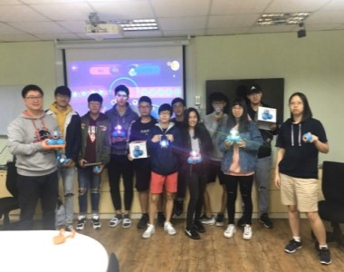
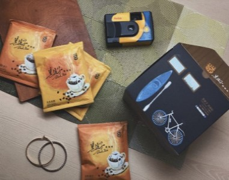
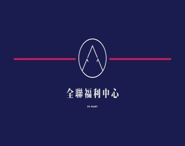
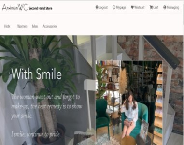
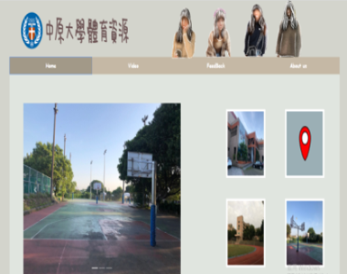

卓訢妤
Xin Yu, Jwo
Birth : 2000.02.15
Phone : 0928277386
E-mail : xinxin021555@gmail.com
我是卓訢妤，目前就讀中原大學資訊管理系，由於希望未來可以走有關生物資訊相關，
因此輔系生科系。我是個外向活潑、勇於嘗試新事物的人，希望能一步一步實現我的夢想!
---別在最能吃苦的年紀，選擇了安逸
Skills
C#
60%
Java
70%
js
70%
HTML5
90%
CSS3
85%
Photoshop
90%
前端網頁
後端網頁
攝影、美工
表演技能
Experience
管理學 | 機器人學習課程志工
先由專業的老師教導我們簡單的程式邏輯、思維，
利用好玩的方式很快帶我們進入狀況也有利用這些
程式操控國外很夯的機器人，之後再由我們用闖關
的方式教導中原幼稚園的小朋友，讓他們及早就有
接觸簡單程式思考邏輯的經驗。

企業概論 | 黑孩子咖啡義賣
由孩子的樹屋的創辦人--陳爸創立的黑孩子咖啡，
目的是累積培養弱勢孩子的專業技能。而我們藉由
企業概論這門課，一方面幫助他們做義賣、宣揚黑
孩子咖啡的名聲，一方面能提升自己各方面的能力
，讓我成長多。

Job Experience
浩元教育館
原本我是浩元教育補習班的學生， 在補習的其間
和老師們都處的不錯，畢業後的第一份工就是留
在浩元幫忙電話招生、發傳單的工作。雖然看似
簡單，但要讓在電話另一頭的人能繼續聽你說明
、讓人願意拿下你的傳單，也是很不容易的一件
事。
全聯福利中心
這算是一個充滿酸甜苦辣的一個工作。在裡面待
過生鮮區、麵包區、補貨和收銀學到各式各樣的
技能，每一個環節都是不同的體驗，尤其是待人
處世、解決問題的能力。

Collections
網頁程式設計期末專案
使用MySQL和JSP寫出購物網站的程式，是大學以
來第一個具有挑戰性的實作網站，從零到有很有成就感。

多媒體程式設計期中專案
使用html和css製作網頁前端設計，也是第一個分組
的前端作品，從拍片、美編、後製......等都是自己的心血。
